Grab Your Supplies
Gather colorful pink and white paper, child-safe scissors, a marker, and a glue stick.
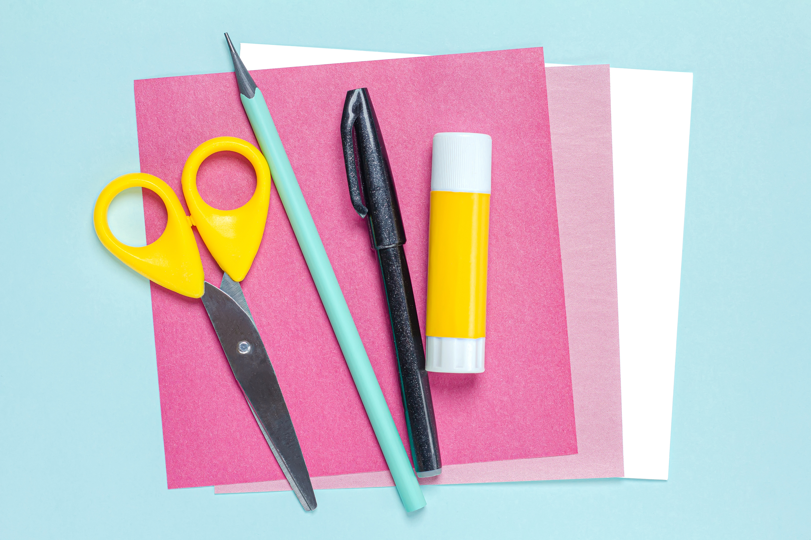
Gather colorful pink and white paper, child-safe scissors, a marker, and a glue stick.
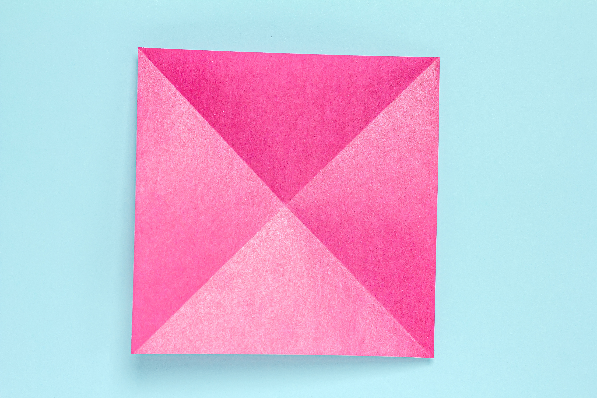
Take your square paper and fold corner to corner both ways, then open it back up to see an "X" crease!
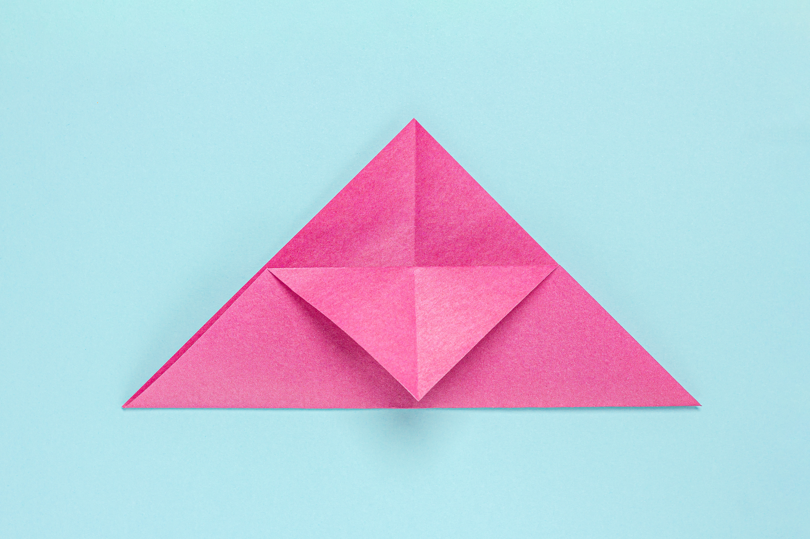
Fold the paper in half like a big triangle, then fold just the top corner flap down to meet the bottom flat edge.
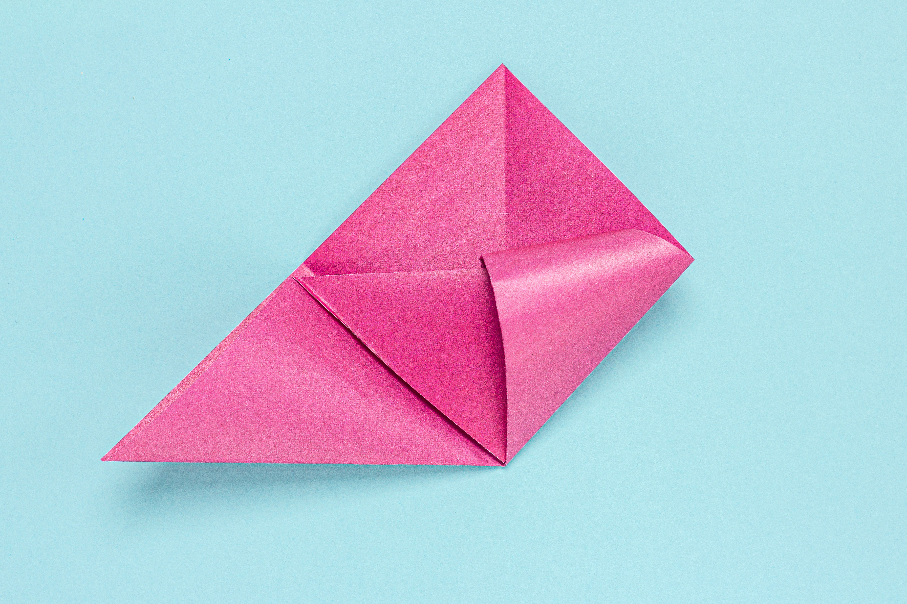
Take both side corners and fold them up toward the top point to make a shiny diamond shape.
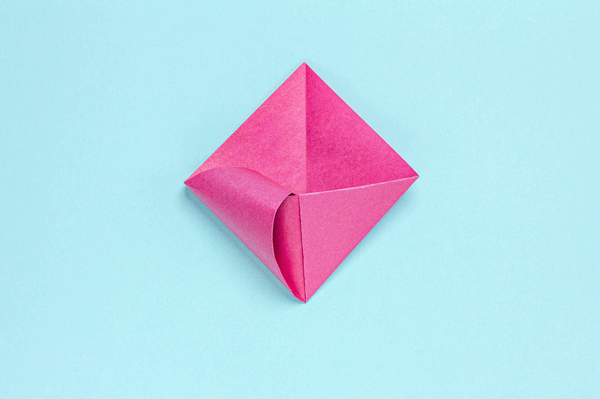
Take those same flaps and tuck the pointy ends straight inside the little pocket you made!
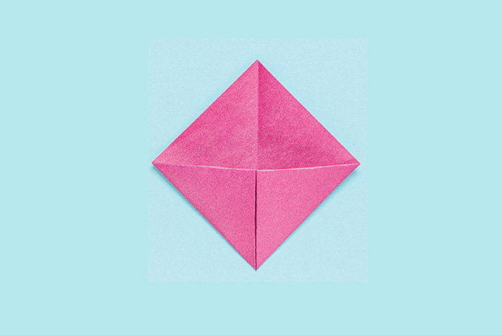
Smooth down every edge with your fingers so you have a neat, tidy diamond pouch.
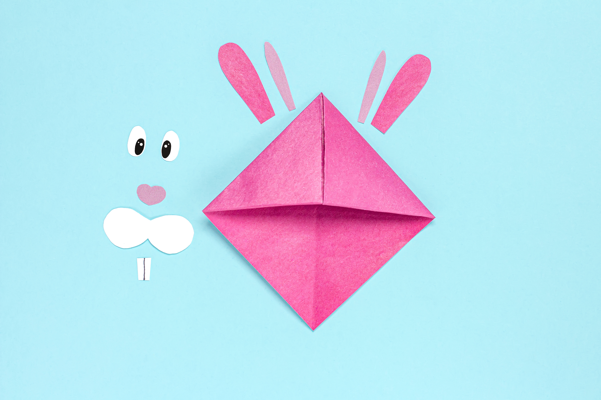
Carefully cut out two bunny ears, pink inner ears, cute white cheeks, bunny teeth, and eyes.
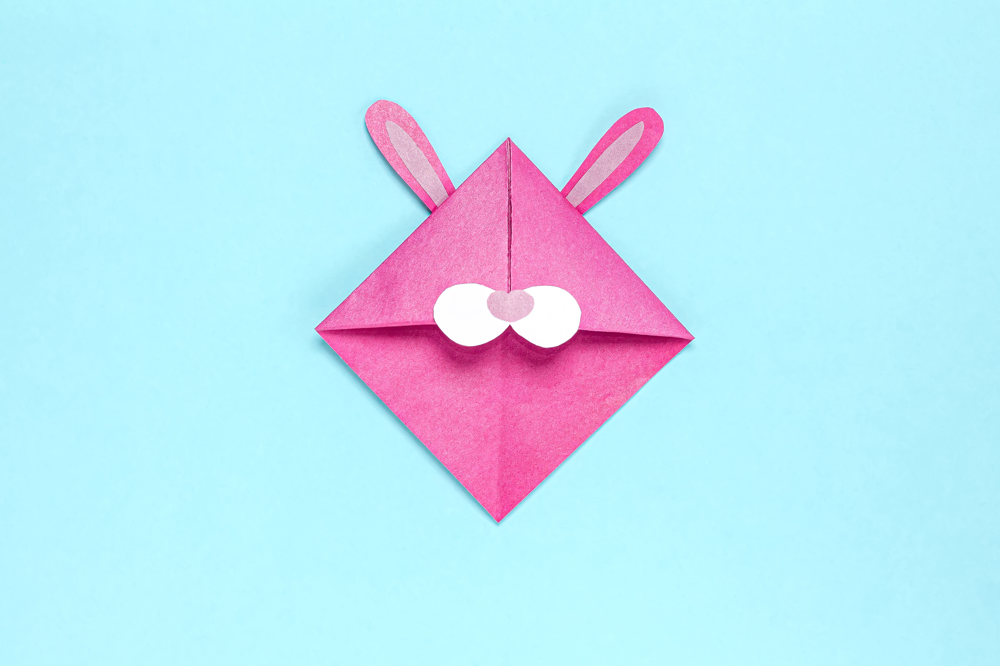
Glue the pink pieces inside the ears, and stick the cute nose and teeth behind the cheeks.
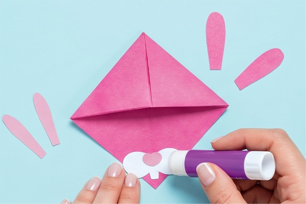
Swipe a little glue onto the back of your bunny ears and face pieces.
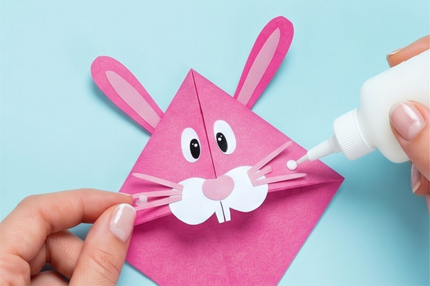
Press the eyes, cheeks, and fun little paper whiskers right onto the front flap.
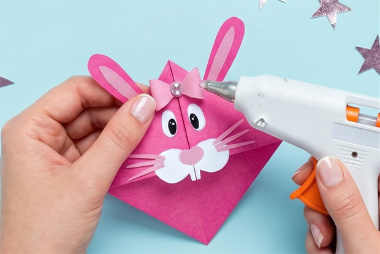
Glue the big ears behind the bookmark and pop a tiny decorative bow on top!
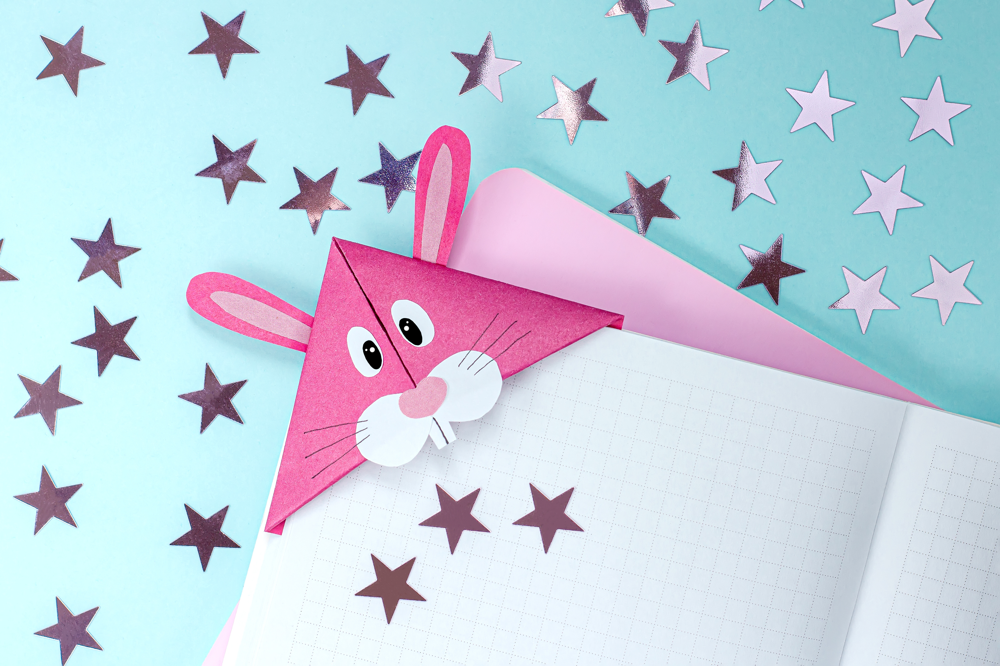
Slide your cute new bunny friend over the corner of your favorite book page to save your spot!